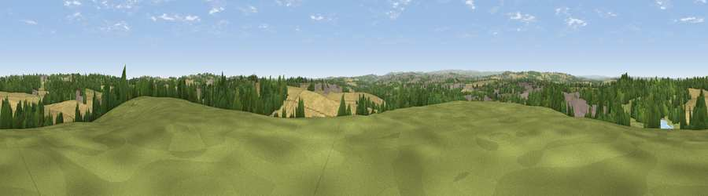

Rabbit Ings Country Park
#20873 in England · top 30% of its area beats it · near ShaftonThe view, rendered

A 360° render of this exact spot computed from the terrain model, tree cover and land cover — summer colours, afternoon light, calibrated against photographs of famous viewpoints. Real trees, hedges and buildings will differ in detail.
The panorama
Grey silhouette: terrain skyline in each direction (720 bearings, Earth curvature and refraction included). Dashed green: skyline with trees (+15 m) and buildings (+8 m) as obstacles. Blue strip: how far the ground is visible on each bearing.
Where the view opens
Wedge length = distance to the farthest visible ground on that bearing (vegetation-aware). Rings at 10, 25 and 50 km.
What fills the view
42% cropland · 23% woodland · 23% grassland · 11% built-up ·
Angular shares of the visible panorama (visual magnitude), not map area. Landscape diversity 0.58 (0–1 Shannon).
Key numbers
More beautiful places nearby
The staircase of upgrades: each row has a higher view potential than everything closer. Driving times are estimates from straight-line distance, calibrated against real road routing — check an actual route before setting out.
| Place | Direction | Drive | Score |
|---|---|---|---|
| Viewpoint near Cold Hiendley | NW · 1 km | ~4 min | 53.3 |
| Viewpoint near Grimethorpe | ESE · 5 km | ~11 min | 63.8 |
| Viewpoint near Woolley | W · 6 km | ~13 min | 67.9 |
| Hoyland Lowe | S · 11 km | ~21 min | 68.7 |
| Viewpoint near Hoylandswaine | WSW · 14 km | ~25 min | 72.7 |
| Viewpoint near Green Moor | SW · 16 km | ~29 min | 73.1 |
| Viewpoint near Wharncliffe Side | SSW · 16 km | ~29 min | 75.0 |
| Viewpoint near Wharncliffe Side | SSW · 17 km | ~29 min | 75.2 |
53.60114, -1.42581 · source: dobih hill · position refined by local search. Computed location — check access rights before visiting.